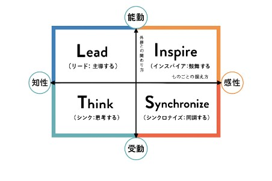

LIST診断とは、2つの軸の組み合わせによって分かれる、
4つのコミュニケーション・スタイルを診断するツールです。
4つのコミュニケーション・スタイル
周囲に対して積極的に働きかけ主導するスタイル。目的や目標を明確にし、困難な問題に対しても果敢にチャレンジし、達成しようとする意欲が高い傾向を示す。
明るく社交的であり、周囲を鼓舞するスタイル。人と会ったり話したりするのが好きで、相手を自分の和の中に取り込もうとする傾向を示す。
何事もじっくりと思考し、距離感を保った関係を築くスタイル。論理的であることや合理的であることに重きをおき、整然とものごとを進める傾向を示す。
何事も協調的に進めるのを好み、他者の意見や主張によく同調するスタイル。周囲との安定や調和を重んじるため、対立や摩擦を避ける傾向を示す。
所要時間: 約3分
回答後に詳しい診断結果が表示されます。